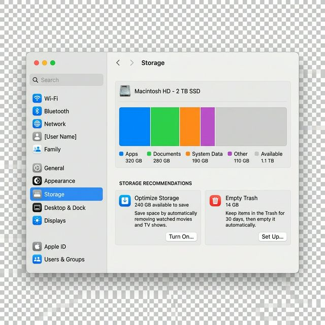

Найчастіше місце на Mac з'їдають кеш програм, старі завантаження, смітник, месенджери та відеоредактори. Нижче я зібрав ті кроки, з яких сам би починав.
Крок 1: Відкриваємо менеджер сховища
- Натисніть на логотип яблука () у лівому верхньому куті екрана.
- Виберіть пункт Системні параметри (System Settings).
- У бічній панелі перейдіть у розділ Загальні (General), а потім праворуч виберіть Сховище (Storage).

Крок 2: Використовуємо рекомендації Apple і перевіряємо великі файли
Я починаю саме звідси, бо тут macOS одразу показує, що саме займає місце. Під смугою ви побачите кілька швидких рішень:
- Оптимізувати сховище: автоматично видаляти переглянуті фільми в Apple TV.
- Автоматично спорожнювати Смітник: файли у смітнику будуть видалятися через 30 днів. Це дуже корисна функція!
Після цього я переходжу в Документи і дивлюся вкладку Великі файли:
- Перейдіть на вкладку «Великі файли». Тут часто лежать старі архіви, відео та інсталятори.
- Виберіть непотрібний файл і натисніть Видалити внизу вікна.
- Окремо перевірте папку Завантаження (Downloads) — там дуже часто лежать гігабайти старих `dmg`, `zip` і відео.
Крок 3: Чистимо кеш програм у Library
Якщо місця все ще мало, далі я дивлюся кеш програм у домашній Library. Починаю з папки:
~/Library/Caches
Щоб відкрити її:
- Відкрийте Finder.
- У верхньому меню натисніть Go → Go to Folder....
- Вставте
~/Library/Cachesі натисніть Enter. - Подивіться, які папки займають найбільше місця. Часто це кеш месенджерів, браузерів, Adobe, редакторів відео або інших важких програм.
Тут у мене просте правило: я закриваю програму і видаляю тільки кеш конкретної програми, а не все підряд.
Крок 4: Очищаємо кеш Telegram у налаштуваннях
Telegram на Mac часто накопичує фото, відео та файли, тому я майже завжди перевіряю його окремо.
- Відкрийте Telegram.
- Перейдіть у Settings.
- Відкрийте розділ Data and Storage.
- Зайдіть у Storage Usage.
- Натисніть Clear Cache і видаліть те, що вже не потрібно локально.
Там же я б зменшив термін зберігання медіа через пункт Keep Media, щоб Telegram автоматично не роздував кеш знову.
Крок 5: Перевіряємо важкі кеші в DaVinci Resolve
DaVinci Resolve може займати дуже багато місця через render cache, proxy-файли та інші тимчасові дані. У деяких випадках це десятки гігабайтів, тому я теж перевіряю його окремо.
Я б почав з кешу рендеру всередині самої програми:
- Відкрийте потрібний проєкт у DaVinci Resolve.
- У верхньому меню відкрийте Playback.
- Виберіть Delete Render Cache.
- Почніть з пункту Unused. Якщо місця все одно мало, можна дивитися в бік All.
У новіших версіях DaVinci Resolve я б ще перевірив керування кешем у налаштуваннях користувача, де можна автоматично видаляти старий кеш через певну кількість днів.
Крок 6: Порада для розробників — Docker
Якщо я бачу, що на Mac стоїть Docker, я теж про нього не забуваю: навіть якщо видалити контейнери, файл образу диска може продовжувати займати 60ГБ+.
Дивіться наш окремий гайд: Як очистити Docker на Mac.
Крок 7: Видаліть програми, якими не користуєтесь
Ще один простий крок, який я б не пропускав: у меню Сховище натиснути «i» поруч із пунктом Програми, відсортувати їх за розміром і видалити те, чим ви давно не користуєтесь.
Що найчастіше радять в інтернеті
Якщо коротко звести все до одного списку, в інтернеті найчастіше радять таке:
- спочатку дивитися вбудований розділ Storage у macOS;
- чистити Downloads і спорожнювати Trash;
- перевіряти кеші програм у
~/Library/Caches; - окремо чистити кеші месенджерів, особливо Telegram;
- перевіряти важкі кеші редакторів відео, наприклад DaVinci Resolve;
- видаляти старі програми, резервні копії iPhone/iPad і великі непотрібні файли.
Небезпечні поради
Є речі, які я б не радив робити, бо вони можуть дати мало користі, а проблем — багато:
- не видаляйте навмання все з System Data;
- не видаляйте всю папку
~/Libraryабо/Library; - не чіпайте без потреби папки
/System,/private,/usrта інші системні каталоги; - не запускайте “чистильники в один клік”, якщо не розумієте, що саме вони видаляють;
- не видаляйте кеш активного проєкту в DaVinci або інших редакторах, якщо не розумієте наслідків.
Я б дивився на очищення пам'яті так: знайти 2-3 реальні джерела, які з'їли місце, і прибрати саме їх. У більшості випадків цього вже достатньо, щоб повернути десятки гігабайтів без ризику для системи.